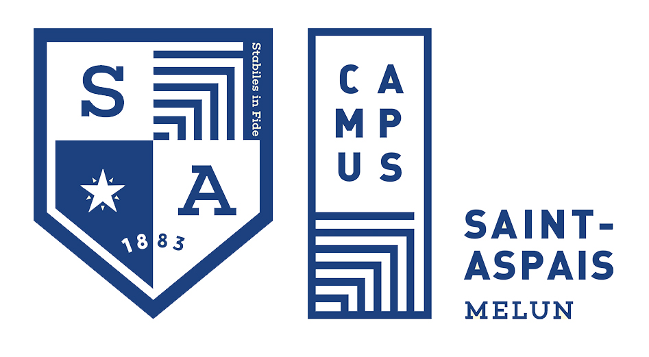

Étudiant en BTS SIO - Campus Saint-Aspais - Melun
Recherche un stage · 4 janv. – 5 févr. 2027

Je suis étudiant en deuxième année de BTS SIO, option SISR. Passionné par l'informatique, le réseau et la cybersécurité, j'ai choisi cette filière pour approfondir mes connaissances techniques et me préparer activement à un métier dans la protection et l'administration des systèmes informatiques.
Mon BTS consiste à former des techniciens capables de gérer des projets informatiques en entreprise, via le développement ou l'administration de systèmes.
Mon parcours éducatif, orienté vers la technologie et les systèmes numériques, m'a permis d'acquérir des bases solides essentielles en cybersécurité, réseaux, et développement. Ces fondations sont actuellement renforcées et approfondies dans le cadre de mon BTS SIO.
Collège Jacques Amyot. Obtenu avec la mention bien.
Lycée Saint-Aspais, Melun. Obtenu avec la mention très bien.
Campus Saint-Aspais, Melun. Administration et sécurisation des réseaux et des systèmes.
Formations validées en Linux et en cybersécurité
Formation encadrée depuis 2025, suivie en parallèle du BTS
Mon objectif est clair : me spécialiser dans la cybersécurité après l'obtention du BTS SIO. Je souhaite poursuivre mes études avec une Licence dans ce domaine passionnant afin de contribuer activement à la protection des infrastructures critiques.
Valider les acquis de l'option SISR et réussir l'épreuve orale de présentation du portfolio.
Intégrer une Licence spécialisée en Cybersécurité, orientée audit et défense des systèmes.
Travailler dans la gestion de la sécurité réseau, la prévention des attaques et la mise en œuvre de politiques de sécurité robustes.
Six stages réalisés pendant mon Bac Pro Systèmes Numériques, puis mon BTS SIO.
Stagiaire au support technique, puis au pôle Infrastructure de la DSI
Migration des postes vers un domaine Active Directory unique, renouvellement de la flotte mobile, sauvegardes AS400 et hotline GLPI.
Préparation et déploiement de 80 postes par masterisation réseau, jonction au domaine et à Azure AD.
Installation, maintenance et dépannage de postes, aide aux utilisateurs.
Hotline : premières masterisations et déploiements d'image (Acronis), remplacement de disques HDD par des SSD, assistance téléphonique.
Stagiaire cybersécurité auprès du RSSI
Conception et pilotage d'une campagne de phishing simulée auprès de 1 352 agents, analyse des résultats et sensibilisation. Découverte de l'EDR et de la supervision des vulnérabilités.
Stagiaire technicien informatique
Remplacement complet du réseau Wi-Fi d'un hôtel parisien sur 7 niveaux, installation et dépannage chez des PME clientes.
Les outils et notions mis en pratique en stage et dans les projets du BTS.
Les missions menées en entreprise et les projets du BTS.
Migration des postes du site de Melun vers un domaine Active Directory unique, jusqu'à la conformité Intune.
Voir le détail VIASANTÉ · 2024 – 2025Création d'une image Windows maître et déploiement par le réseau sur 80 portables.
Voir le détail SDIS 77 · 2024Simulation d'hameçonnage auprès de 1 352 agents, analyse des résultats et sensibilisation.
Voir le détail L'infopratique · 2023Remplacement du routeur, du switch PoE et des 7 bornes Wi-Fi d'un hôtel sur 7 niveaux.
Voir le détailInfrastructure en équipe : pare-feu pfSense et DMZ, VPN Tailscale, serveurs web...
Voir le détail Septembre 2026Réseau segmenté et attaque dessus.
Voir le détail 2025 – 2026Site de recettes PHP/MySQL auto-hébergé sur un serveur Apache sous Linux, avec sauvegarde FTP.
Voir le détailMa veille 2025 – 2027 porte sur les grands modèles de langage (LLM) et l'actualité de l'IA : nouveaux modèles comme ChatGPT, Gemini ou Claude, leurs usages et les problèmes qu'ils soulèvent. Elle s'appuie sur la routine de veille cyber mise en place en 1re année.
Voir ma veille